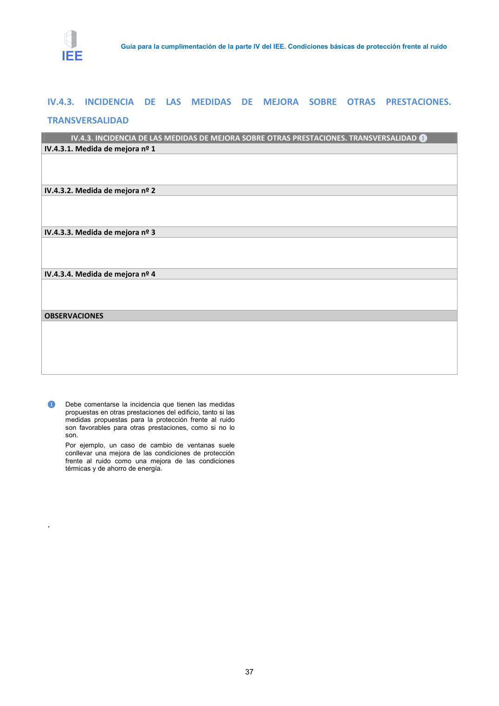
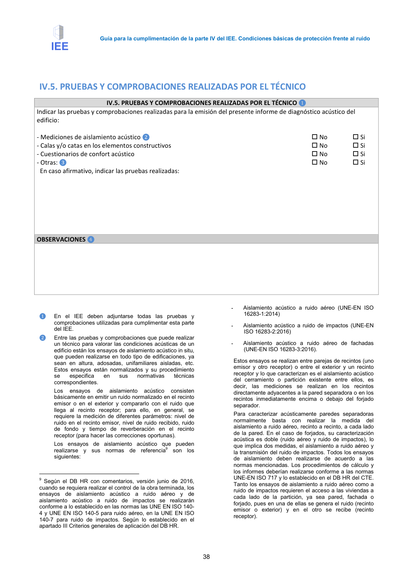

GUIA · TRANSVERSALIDAD · versión 2016-11-01 · capa guia
Formatos: JSON compacto · Markdown · PDF fuente
Ámbito del documento · texto del ámbito · documento y tablas
Tipo: tablas, figuras · nivel 3 · sección estimada: Anejo 3. Valoración del aislamiento acústico de elementos de separación horizontales y sus mejoras · padre: a0017
TRANSVERSALIDAD IV.4.3. INCIDENCIA DE LAS MEDIDAS DE MEJORA SOBRE OTRAS PRESTACIONES. TRANSVERSALIDAD ❶ IV.4.3.1. Medida de mejora nº 1 IV.4.3.2. Medida de mejora nº 2 IV.4.3.3. Medida de mejora nº 3 IV.4.3.4. Medida de mejora nº 4 OBSERVACIONES ❶ Debe comentarse la incidencia que tienen las medidas propuestas en otras prestaciones del edificio, tanto si las medidas propuestas para la protección frente al ruido son favorables para otras prestaciones, como si no lo son. Por ejemplo, un caso de cambio de ventanas suele conllevar una mejora de las condiciones de protección frente al ruido como una mejora de las condiciones térmicas y de ahorro de energía. . Guía para la cumplimentación de la parte IV del IEE. Condiciones básicas de protección frente al ruido 38


PDF fuente redistribuible: copia fiel enlazada en esta página (SHA256 verificado).